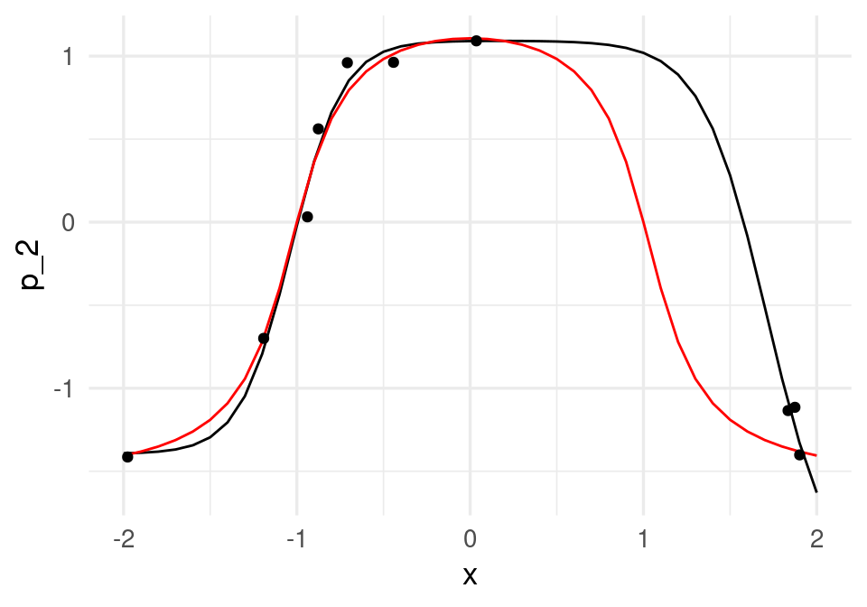
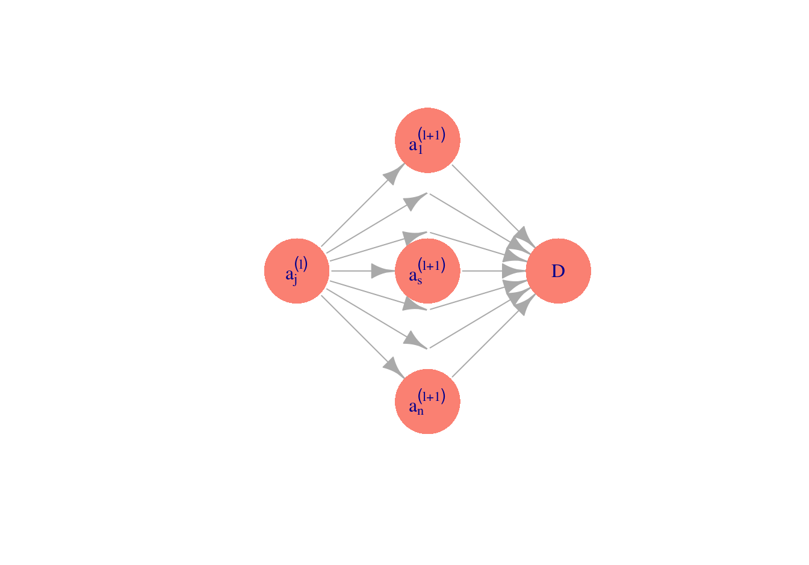

6 Redes neuronales (intro)
6.1 Introducción a redes neuronales
En partes anteriores, vimos cómo hacer más flexibles los métodos de regresión: la idea es construir entradas derivadas a partir de las variables originales, e incluirlas en el modelo de regresión. Este enfoque es bueno cuando tenemos relativamente pocas variables originales de entrada, y tenemos una idea de qué variables derivadas es buena idea incluir (por ejemplo, splines para una variable como edad, interacciones para variables importantes, etc). Sin embargo, si hay una gran cantidad de entradas, esta técnica puede ser prohibitiva en términos de cálculo y trabajo manual.
Por ejemplo, si tenemos unas 100 entradas numéricas, al crear todas las interacciones \(x_i x_j\) y los cuadrados \(x_i^2\) terminamos con unas 5150 variables. Para el problema de dígitos (256 entradas o pixeles) terminaríamos con unas 32 mil entradas adicionales. Aún cuando es posible regularizar, en estos casos suena más conveniente construir entradas derivadas a partir de los datos.
Para hacer esto, consideramos entradas \(X_1, . . . , X_p\), y supongamos que tenemos un problema regresión donde queremos predecir \(Y\). Aunque hay muchas maneras de construir entradas derivadas, una manera simple sería construir \(m\) nuevas entradas mediante:
\[a_k = h \left ( \theta_{k,0} + \sum_{j=1}^p \theta_{k,j}x_j \right)\]
para \(k=1,\ldots, m\), donde \(h\) es una función no lineal (logística o relu entre otras), y las \(\theta\) son parámetros que seleccionaremos más tarde. La idea es hacer combinaciones lineales de variables transformadas.
Modelamos ahora la respuesta usando las entradas derivadas en lugar de las originales en una regresión lineal:
\(a_1, . . . , a_m\): \[f(x) = \beta_0 + \sum_{j=1}^m \beta_ja_j\]
Podemos representar este esquema con una red dirigida (\(m=3\) variables derivadas):
La función logística
Una de las transformaciones \(h\) más comunes para construir entradas derivadas es la función logística:
La función logística está dada por \[h(x)=\frac{e^x}{1+e^x}\]
h <- function(x){exp(x)/(1+exp(x)) }
ggplot(tibble(x = seq(-6, 6, 0.01)), aes(x = x)) + stat_function(fun = h)
Observaciones:
- ¿Por qué usar \(h\) para las entradas derivadas \(a_k\)? En primer lugar, nótese que si no transformamos con alguna función no lineal \(h\), el modelo final \(p_1\) para la probabilidad condicional es el mismo que el de regresión logística (combinaciones lineales de combinaciones lineales son combinaciones lineales). Sin embargo, al transformar con \(h\), las \(x_j\) contribuyen de manera no lineal a las entradas derivadas.
- Las variables \(a_k\) que se pueden obtener son similares (para una variable de entrada) a los splines que vimos en la parte anterior.
- Es posible demostrar que si se crean suficientes entradas derivadas (\(m\) es suficientemente grande), entonces la función \(f(x)\) puede aproximar cualquier función continua. La función \(h\) (que se llama función de activación no es especial: funciones continuas con forma similar a la sigmoide (logística) pueden usarse también (por ejemplo, arcotangente, o lineal rectificada). La idea es que cualquier función se puede aproximar mediante superposición de funciones tipo sigmoide (ver por ejemplo Cybenko 1989, Approximation by Superpositions of a Sigmoidal Function).
¿Cómo construyen entradas las redes neuronales?
Comencemos por un ejemplo simple de clasificación binaria con una sola entrada \(x\). Supondremos que el modelo verdadero está dado por:
h <- function(x){
1/(1 + exp(-x)) # es lo mismo que exp(x)/(1 + exp(x))
}
x <- seq(-2, 2, 0.1)
f <- atan(2 - 2 * x^2)
set.seed(2805721)
x_1 <- runif(10, -2, 2)
y <- rnorm(10, atan(2 - 2 * x_1^2), 0.2)
datos <- tibble(x_1, y)
dat_f <- tibble(x, f)
g <- ggplot(dat_f) + geom_line(aes(x, f))
gg + geom_point(data = datos, aes(x = x_1, y = y), colour = 'red')
donde adicionalmente graficamos 30 datos simulados. Recordamos que queremos ajustar la curva roja, que da la probabilidad condicional de clase. Podríamos ajustar un modelo de regresión logística expandiendo manualmente el espacio de entradas agregando \(x^2\), y obtendríamos un ajuste razonable. Pero la idea aquí es que podemos crear entradas derivadas de forma automática.
Supongamos entonces que pensamos crear dos entradas \(a_1\) y \(a_2\), funciones de \(x_1\), y luego predecir \(g.1\), la clase, en función de estas dos entradas. Por ejemplo, podríamos tomar:

donde hacemos una regresión para predecir \(y\) mediante \[f(a) = \beta_0 + \beta_1a_1+\beta_2 a_2,\] \(a_1\) y \(a_2\) están dadas por \[a_1(x)=h(\beta_{1,0} + \beta_{1,1} x_1),\] \[a_2(x)=h(\beta_{2,0} + \beta_{2,1} x_1).\]
Por ejemplo, podríamos tomar
a_1 <- h( 1 + 2 * x) # 2(x+1/2)
a_2 <- h(-1 + 2 * x) # 2(x-1/2) # una es una versión desplazada de otra.Las funciones \(a_1\) y \(a_2\) dependen de \(x\) de la siguiente forma:
dat_a <- tibble(x = x, a_1 = a_1, a_2 = a_2)
dat_a_2 <- dat_a |> gather(variable, valor, a_1:a_2)
ggplot(dat_a_2, aes(x=x, y=valor, colour=variable, group=variable)) + geom_line()Si las escalamos y sumamos, obtenemos
dat_a <- tibble(x=x, a_1 = a_1, a_2 = a_2,
suma = -1.5 + 6 * a_1 - 6 * a_2)
dat_a_2 <- dat_a |>
pivot_longer(a_1:suma, names_to = "variable", values_to = "valor")
ggplot(dat_a_2, aes(x = x, y = valor, colour = variable, group = variable)) + geom_line()
y finalmente obtenemos:
dat_2 <- tibble(x, f = (-1.5 + 6 * a_1 - 6 * a_2))
ggplot(dat_2, aes(x=x, y = f)) + geom_line()+
geom_line(data=dat_f, aes(x=x,y=f), col='red') +
geom_point(data = datos, aes(x = x_1, y = y))
que da un ajuste razonable. Este es un ejemplo de cómo la mezcla de dos funciones logísticas puede replicar esta función con forma de chipote. Otras funciones más complejas se pueden obtener incluyendo más \(a_j\)’s que son versiones escaladas y desplazadas de la función logística. El mecanismo para combinar estas \(a_j\)’s es similar al de los splines que vimos en la sección anterior.
¿Cómo ajustar los parámetros?
Para encontrar los mejores parámetros, minimizamos la devianza sobre los parámetros \(\beta_0,\beta_1,\beta_2\) y \(\beta_{1,0},\beta_{1,1},\beta_{2,0},\beta_{2,1}\).
Veremos más adelante que conviene hacer esto usando descenso o en gradiente o descenso en gradiente estocástico, pero por el momento usamos la función optim de R para minimizar la devianza. En primer lugar, creamos una función que para todas las entradas calcula los valores de salida. En esta función hacemos feed-forward de las entradas a través de la red para calcular la salida.
## esta función calcula los valores de cada nodo en toda la red,
## para cada entrada
feed_fow <- function(beta, x){
a_1 <- h(beta[1] + beta[2] * x) # calcula variable 1 de capa oculta
a_2 <- h(beta[3] + beta[4] * x) # calcula variable 2 de capa oculta
f <- (beta[5] + beta[6] * a_1 + beta[7] * a_2) # calcula capa de salida
f
}Nótese que simplemente seguimos el diagrama mostrado arriba para hacer los cálculos, combinando linealmente las entradas en cada capa.
Ahora definimos una función para calcular la devianza. Conviene crear una función que crea funciones, para obtener una función que sólo se evalúa en los parámetros para cada conjunto de datos de entrenamiento fijos:
perdida_cuad_fun <- function(x, y){
# esta función es una fábrica de funciones
perdida_cuad <- function(beta){
f <- feed_fow(beta, x)
mean((y - f)^2)
}
perdida_cuad
}Por ejemplo:
perdida_cuad <- perdida_cuad_fun(x_1, y) # crea función
## ahora dev toma solamente los 7 parámetros beta:
perdida_cuad(c(0,0,0,0,0,0,0))[1] 1.034101Finalmente, intentamos resolver el problema de minimización de la pérdida cuadrática de los datos de entrenamiento. Para esto usaremos la función optim de R:
set.seed(5)
salida <- optim(rnorm(7), perdida_cuad, method = 'BFGS') # inicializar al azar punto inicial
beta <- salida$par
beta[1] -9.097577 5.315080 -6.973249 -6.762489 1.093208 -3.309966 -2.488820Y ahora podemos graficar con el vector \(\beta\) encontrado:
## hacer feed forward con beta encontrados
p_2 <- feed_fow(beta, x)
dat_2 <- data.frame(x, p_2 = p_2)
ggplot(dat_2, aes(x = x, y = p_2)) + geom_line()+
geom_line(data = dat_f, aes(x = x, y = f), col='red') +
geom_point(data = datos, aes(x = x_1, y = y))
Los coeficientes estimados, que en este caso muchas veces se llaman pesos, son:
beta |> round(2)[1] -9.10 5.32 -6.97 -6.76 1.09 -3.31 -2.49que parecen ser muy grandes. Igualmente, de la figura vemos que el ajuste no parece ser muy estable (esto se puede confirmar corriendo con distintos conjuntos de entrenamiento). Podemos entonces regularizar ligeramente la devianza para resolver este problema. En primer lugar, definimos la devianza regularizada (ridge), donde penalizamos todos los coeficientes que multiplican a una variable, pero no los intercepts:
perdida_cuad_fun_r <- function(x, y, lambda){
# esta función es una fábrica de funciones
perdida_reg <- function(beta){
f <- feed_fow(beta, x)
# en esta regularizacion quitamos sesgos, pero puede hacerse también con sesgos.
mean((y - f)^2) + lambda * sum(beta[c(2,4,6:7)]^2)
}
perdida_reg
}perdida_r <- perdida_cuad_fun_r(x_1, y, 0.001) # crea función dev
set.seed(5)
salida <- optim(rnorm(7, 0, 1), perdida_r, method = 'BFGS') # inicializar al azar punto inicial
beta <- salida$par
perdida_cuad(beta) / nrow(datos)[1] 0.001831033f_2 <- feed_fow(beta, x)
dat_2 <- data.frame(x, f_2 = f_2)
beta[1] -2.072798 2.136928 -4.317303 -4.221802 1.458438 -3.053558 -2.952405ggplot(dat_2, aes(x = x, y = f_2)) + geom_line() +
geom_line(data = dat_f, aes(x = x, y = f), col='red') +
geom_point(data = datos, aes(x = x_1, y = y))
y obtenemos un ajuste más estable. Podemos usar también keras. El modelo, con una capa intermedia de dos unidades, y regularización ridge para los coeficientes, y optimización por descenso en gradiente se define como:
library(keras)
# para reproducibilidad:
tensorflow::set_random_seed(13)
# construir modelo
ejemplo_mod <- keras_model_sequential()
ejemplo_mod |>
layer_dense(units = 2,
activation = "sigmoid", kernel_regularizer = regularizer_l2(0.001)) |>
layer_dense(units = 1,
activation = "linear", kernel_regularizer = regularizer_l2(0.001))x_mat <- as.matrix(datos$x_1, ncol = 1)
y <- datos$y
# usamos devianza como medida de error y descenso en gradiente:
ejemplo_mod |> compile(loss = "mse",
optimizer = optimizer_sgd(learning_rate = 0.2),
metrics = "mse")
# nota: esta learning rate (lr) es demasiado alta para problemas típicos
historia <- ejemplo_mod |>
fit(x_mat, y,
batch_size = nrow(x_mat), epochs = 500, verbose = 0)Después de verificar convergencia (chécalo examinando la variable historia), graficamos para ver que obtuvimos resultados similares:
dat_3 <- tibble(x = x, f_2 = predict(ejemplo_mod, as.matrix(x, ncol = 1))[,1])
ggplot(dat_3, aes(x = x, y = f_2)) + geom_line()+
geom_line(data = dat_f, aes(x = x, y = f), col='red') +
geom_point(data = datos, aes(x = x_1, y = y))
Los coeficientes obtenidos se muestran abajo. Nótese: la primera componente de la lista son los coeficientes de la unidad 1 y 2 para \(x\). La segunda son los sesgos u ordenadas al origen, la tercera los coeficientes de la respuesta para las unidades 1 y 2, y el cuarto es el sesgo u ordenada al origen de la unidad de salida:
get_weights(ejemplo_mod)[[1]]
[,1] [,2]
[1,] -2.45195 -2.848296
[[2]]
[1] -2.567334 2.578543
[[3]]
[,1]
[1,] -3.460155
[2,] 3.080144
[[4]]
[1] -1.392124Ejercicio: compara los coeficientes que obtuviste en este ejemplo con los anteriores.
6.2 Interacciones en redes neuronales
Es posible capturar interacciones con redes neuronales. Consideremos el siguiente ejemplo simple:
f <- function(x1, x2){
2 + 0.1* x1 + 0.1 * x2 + 10 * (x1 - 0.5) * (x2 - 0.5)
}
dat <- expand.grid(x1 = seq(0, 1, 0.05), x2 = seq(0, 1, 0.05))
dat <- dat |> mutate(f = f(x1, x2))
ggplot(dat, aes(x=x1, y=x2)) + geom_tile(aes(fill=f))
Esta función puede entenderse como un o exclusivo: la respuesta es alta sólo cuando \(x_1\) y \(x_2\) tienen valores opuestos (\(x_1\) grande pero \(x_2\) chica y viceversa).
No es posible modelar correctamente esta función mediante el modelo lineal (sin interacciones). Pero podemos incluir la interacción en el modelo lineal o intentar usar una red neuronal. Primero simulamos unos datos y probamos el modelo logístico con y sin interacciones:
set.seed(322)
n <- 2000
dat_ent <- tibble(x1 = rbeta(n, 1, 1), x2 = rbeta(n, 1, 1)) |>
mutate(f = f(x1, x2)) |>
mutate(y = f + rnorm(n, 0, 0.1))
mod_1 <- lm(y ~ x1 + x2, data = dat_ent)
mod_1
Call:
lm(formula = y ~ x1 + x2, data = dat_ent)
Coefficients:
(Intercept) x1 x2
1.8936 0.2046 0.2097 El resultado del modelo lineal no es bueno:
tibble(y_hat = fitted(mod_1), y = dat_ent$y) |>
ggplot(aes(x = y_hat, y = y)) + geom_point(color = "red") +
geom_abline() +
coord_obs_pred()
Sin embargo, agregando una interacción lo mejoramos considerablemente (examina la raíz del error cuadrático medio, por ejemplo):
mod_2 <- lm(y ~ x1 + x2 + x1:x2, data = dat_ent)
mod_2
Call:
lm(formula = y ~ x1 + x2 + x1:x2, data = dat_ent)
Coefficients:
(Intercept) x1 x2 x1:x2
4.499 -4.895 -4.885 9.964 tibble(y_hat = fitted(mod_2), y = dat_ent$y) |>
ggplot(aes(x = y_hat, y = y)) + geom_point(color = "red") +
geom_abline() +
coord_obs_pred()
Observese la gran diferencia de error entre los dos modelos (en este caso, el sobreajuste no es un problema).
Ahora consideramos qué red neuronal puede ser apropiada.
tensorflow::set_random_seed(421)
mod_inter <- keras_model_sequential()
mod_inter |>
layer_dense(units = 4, activation = "sigmoid",
name = "capa_intermedia", input_shape = c(2)) |>
layer_dense(units = 1, name = "capa_final",
activation = "linear") mod_inter |> compile(loss = "mse",
optimizer = optimizer_sgd(learning_rate = 0.3, momentum = 0.5))
historia <- mod_inter |>
fit(dat_ent |> select(x1, x2) |> as.matrix(), dat_ent$y,
batch_size = 20,
epochs = 100, verbose = 0)Verificamos que esta red captura la interacción:
preds <- predict(mod_inter,
dat |> select(x1, x2) |> as.matrix())
dat <- dat |> mutate(f_red = preds)
ggplot(dat, aes(x = x1, y = x2)) +
geom_tile(aes(fill = f_red))preds_ent <- predict(mod_inter, dat_ent |> select(x1, x2) |> as.matrix())
tibble(pred = preds_ent[,1], f = dat_ent$y) |>
ggplot(aes(x = pred, y = f)) +
geom_point() +
geom_abline(colour = "red") +
coord_obs_pred()Aunque podemos extraer los cálculos de la red ajustada, vamos a hacer el cálculo de la red a mano. La función feed forward es:
beta <- get_weights(mod_inter)
feed_fow <- function(beta, x){
a <- h(t(beta[[1]]) %*% x + as.matrix(beta[[2]], 2, 1))
f <- t(beta[[3]]) %*% a + as.matrix(beta[[4]], 1, 1)
f
}Observación: ¿cómo funciona esta red? Consideremos la capa intermedia (3 unidades) para cuatro casos: \((0,0), (0,1), (1,0), (1,1)\):
mat_entrada <- tibble(x_1 = c(0,0,1,1), x_2 = c(0,1,0,1)) |> as.matrix()
capa_1 <- keras_model(inputs = mod_inter$input,
outputs = get_layer(mod_inter, "capa_intermedia")$output)
pred_mat <- predict(capa_1, mat_entrada) |> round(2)
rownames(pred_mat) <- c("apagadas", "segunda", "primera", "ambas")
pred_mat [,1] [,2] [,3] [,4]
apagadas 0.15 0.00 0.64 0.12
segunda 0.59 0.05 0.09 0.01
primera 0.01 0.05 0.07 0.60
ambas 0.05 0.56 0.00 0.06Los pesos de la última capa son:
beta[3:4][[1]]
[,1]
[1,] -5.422077
[2,] 4.781271
[3,] 5.289690
[4,] -5.083926
[[2]]
[1] 2.370607Ejercicio: interpreta la red en términos de qué unidades están encendidas (valor cercano a 1) o apagadas (valor cercano a 0). ¿Puedes ajustar este modelo con dos tres unidades intermedias? Haz varias pruebas: ¿qué dificultades encuentras?
6.3 Cálculo en redes: feed-forward
Ahora generalizamos lo que vimos arriba para definir la arquitectura básica de redes neuronales y cómo se hacen cálculos en las redes.
Tip
A las variables originales les llamamos capa de entrada de la red, y a la variable de salida capa de salida. Puede haber más de una capa intermedia. A estas les llamamos capas ocultas.
Cuando todas las conexiones posibles de cada capa a la siguiente están presente, decimos que la red es completamente conexa.
Como vimos en el ejemplo de arriba, para hacer cálculos en la red empezamos con la primera capa, hacemos combinaciones lineales y aplicamos nuestra función no lineal \(h\). Una vez que calculamos la segunda capa, podemos calcular la siguiente de la misma forma: combinaciones lineales y aplicación de \(h\). Y así sucesivamente hasta que llegamos a la capa final.
6.4 Notación
Sea \(L\) el número total de capas. En primer lugar, para un cierto caso de entrada \(x = (x_1,x_2,\ldots, x_p)\), denotamos por:
- \(a^{(l)}_j\) el valor que toma la unidad \(j\) de la capa \(l\), para \(j=0,1,\ldots, n_{l}\), donde \(n_l\) es el número de unidades de la capa \(l\).
- Ponemos \(a^{(l)}_0=1\) para lidiar con los sesgos.
- *En particular, ponemos \(a^{(1)}_j = x_j\), que son los valores de las entradas (primera capa)
- Para un problema de regresión, la última capa solo tiene un elemento, que es \(y = a^{(L)}\).
Adicionalmente, escribimos
\(\theta_{i,k}^{(l)}=\) es el peso de entrada \(a_{k}^{(l-1)}\) de capa \(l-1\) en la entrada \(a_{i}^{(l)}\) de la capa \(l\).
Los sesgos están dados por \[\theta_{i,0}^{(l)}\]
Ejemplo
En nuestro ejemplo, tenemos que en la capa \(l=3\) hay dos unidades. Así que podemos calcular los valores \(a^{(3)}_1\) y \(a^{(3)}_2\). Están dados por
\[a_1^{(3)} = h(\theta_{1,0}^{(2)} + \theta_{1,1}^{(2)} a_1^{(2)}+ \theta_{1,2}^{(2)}a_2^{(2)}+ \theta_{1,3}^{(2)} a_3^{(2)})\] \[a_2^{(3)} = h(\theta_{2,0}^{(2)} + \theta_{2,1}^{(2)} a_1^{(2)}+ \theta_{2,2}^{(2)}a_2^{(2)}+ \theta_{2,3}^{(2)} a_3^{(2)})\]
Como se ilustra en la siguiente gráfica:

Para visualizar las ordenadas (que también se llaman sesgos en este contexto), ponemos \(a_{0}^{(2)}=1\).

Ejemplo
Consideremos propagar a la capa 3 a partir de la capa 2. Usaremos los siguientes pesos para capa 3 y valores de la capa 2 (en gris están los sesgos):
Que en nuestra notación escribimos como \[a^{(2)}_0 = 1, a^{(2)}_1 = -2, a^{(2)}_2 = 5, a^{(2)}=3\] y los pesos son, para la primera unidad: \[\theta^{(2)}_{1,0} = 3, \,\,\, \theta^{(2)}_{1,1} = 1.5,\,\,\,\theta^{(2)}_{1,2} = -1,\,\,\theta^{(2)}_{1,3} = -0.5 \] y para la segunda unidad \[\theta^{(2)}_{2,0} = 1, \,\,\, \theta^{(2)}_{2,1} = 2,\,\,\,\theta^{(2)}_{2,2} = 0.5,\,\, \theta^{(2)}_{2,3} = -0.2\] Y ahora queremos calcular los valores que toman las unidades de la capa 3, que son \(a^{(3)}_1\) y \(a^{(3)}_2\)$
Para hacer feed forward a la siguiente capa, hacemos entonces
\[a^{(3)}_1 = h(3 + a^{(2)}_1 - a^{(2)}_2 -0.5 a_3^{(2)}),\] \[a^{(3)}_2 = h(1 + 2a^{(2)}_1 + 0.5a^{(2)}_2 - 0.2 a_3^{(2)}),\]
Ponemos los pesos y valores de la capa 2 (incluyendo sesgo):
a_2 <- c(1, -2, 5, 3) # ponemos un 1 al principio para el sesgo
theta_2_1 = c(3, 1.5, -1.0, -0.5)
theta_2_2 = c(1, 2, 0.5, -0.2)y calculamos
a_3 <- c(1, h(sum(theta_2_1*a_2)),h(sum(theta_2_2*a_2))) # ponemos un 1 al principio
a_3[1] 1.000000000 0.001501182 0.2497398946.5 Algoritmo de Feed forward
Para calcular los valores de salida de una red a partir de pesos y datos de entrada, usamos el algoritmo feed-forward, calculando capa por capa.
Feed-forward
Para la primera capa, escribimos las variables de entrada: \[a^{(1)}_j = x_j, j=1\ldots,n_1\] Para la primera capa oculta, o la segunda capa \[a^{(2)}_j = h\left( \theta_{j,0}^{(1)}+ \sum_{k=1}^{n_1} \theta_{j,k}^{(1)} a^{(1)}_k \right), j=1\ldots,n_2\] para la \(l\)-ésima capa: \[a^{(l)}_j = h\left( \theta_{j,0}^{(l-1)}+ \sum_{k=1}^{n_{l-1}} \theta_{j,k}^{(l-1)} a^{(l-1)}_k \right), j=1\ldots,n_{l}\] y así sucesivamente. Para la capa final o de salida en un problema de regresión, suponiendo que tenemos \(L\) capas (\(L-2\) capas ocultas): \[f(x) = \theta_{1,0}^{(L-1)}+ \sum_{k=1}^{n_{L-1}} \theta_{1,k}^{(L-1)} a^{(L-1)}_k .\]
Nótese que entonces:
Tip
Cada capa se caracteriza por el conjunto de parámetros \(\Theta^{(l)}\), que es una matriz de \(n_l\times n_{l-1}\).
La red completa entonces se caracteriza por:
- La estructura elegida (número de capas ocultas y número de nodos en cada capa oculta).
- Las matrices de pesos en cada capa \(\Theta^{(1)},\Theta^{(2)},\ldots, \Theta^{(L-1)}\)
Adicionalmente, escribimos en forma vectorial: \[a^{(l)} = (a^{(l)}_0, a^{(l)}_1, a^{(l)}_2, \ldots, a^{(l)}_{n_l})^t\]
Para calcular la salidas, igual que hicimos, antes, propagaremos hacia adelante los valores de las variables de entrada usando los pesos. Agregando entradas adicionales en cada capa \(a_0^{(l)}\), \(l=1,2,\ldots, L-1\), donde \(a_0^{l}=1\), y agregando a \(\Theta^{(l)}\) una columna con las ordenadas al origen (o sesgos) podemos escribir:
Feed-forward matricial
Capa 1 (vector de entradas) \[ a^{(1)} = x\]
Capa 2 \[ a^{(2)} = h(\Theta^{(1)}a^{(1)})\]
Capa \(l\) (oculta) \[ a^{(l)} = h(\Theta^{(l-1)}a^{(l-1)})\] donde \(h\) se aplica componente a componente sobre los vectores correspondientes.
Capa de salida:
En un problema de regresión, la capa de salida se calcula como un regresión lineal: \[a^{(L)}= f(x) = \Theta^{(L-1)}a^{(L-1)}\] Nótese que feed-foward consiste principalmente de multiplicaciones de matrices con algunas aplicaciones de \(h\)
6.6 Algoritmo de Backpropagation: cálculo del gradiente (regresión)
Para ajustar los pesos y sesgos de las redes (valores \(\theta\)), utilizaremos descenso en gradiente y otros algoritmos derivados del gradiente (descenso estocástico). En esta parte entonces veremos cómo calcular estos gradientes con el algoritmo de back-propagation, que es una aplicación de la regla de la cadena para derivar. Back-propagation resulta en una fórmula recursiva donde propagamos errores de la red como gradientes desde el final de red (capa de salida) hasta el principio, capa por capa.
Consideramos el problema de regresión
Recordamos que la pérdida cuadrática (con regularización ridge, dividiendo entre 2 por conveniencia) es
\[D = -\frac{1}{2n}\sum_{i=1}^n (y^{(i)} - f(x^{(i)}))^2 + \lambda \sum_{l=2}^{L} \sum_{k=1}^{n_{l-1}} \sum_{j=1}^{n_l}(\theta_{j,k}^{(l)})^2.\]
Queremos entonces calcular las derivadas de la devianza o función de pérdida con respecto a cada parámetro \(\theta_{j,k}^{(l)}\). Esto nos proporciona el gradiente para nuestro algoritmo de descenso.
Consideramos aquí el problema de regresión con pérdida cuadrática y sin regularización. La parte de la parcial que corresponde al término de regularización es fácil de agregar al final.
Recordamos también nuestra notación para la función logística (o sigmoide):
\[h(z)=\frac{1}{1+e^{-z}}.\] Necesitaremos su derivada, que está dada por (cálculala): \[h'(z) = h(z)(1-h(z))\]
Cálculo para un caso de entrenamiento
Primero simplificamos el problema y consideramos calcular las parciales para un solo caso de entrenamiento \((x,y)\): \[ D= \frac{1}{2}\left ( y -f(x)\right)^2 . \]
Después sumaremos sobre toda la muestra de entrenamiento. Entonces queremos calcular \[\frac{\partial D}{\partial \theta_{j,k}^{(l)}}\]
Y escribiremos, con la notación de arriba, \[a^{(l+1)}_j = h(z^{(l+1)}_j)\] donde \[z^{(l+1)} = \Theta^{(l)} a^{(l)},\] que coordenada a coordenada se escribe como \[z^{(l+1)}_j = \sum_{k=0}^{n_{l}} \theta_{j,k}^{(l)} a^{(l)}_k\]
Paso 1: Derivar respecto a capa \(l+1\)
Como los valores de cada capa determinan los valores de salida y la devianza, podemos escribir (recordemos que \(a_0^{(l)}=1\) es constante): \[D=D(a_0^{(l+1)},a_1^{(l+1)},a_2^{(l+1)},\ldots, a_{n_{l+1}}^{(l+1)})=D(a_1^{(l+1)},a_2^{(l+1)},\ldots, a_{n_{l+1}}^{(l+1)})\]
Así que por la regla de la cadena para varias variables: \[\frac{\partial D}{\partial \theta_{j,k}^{(l)}} = \sum_{t=1}^{n_{l}} \frac{\partial D}{\partial a_t^{(l+1)}}\frac{\partial a_t^{(l+1)}} {\partial \theta_{j,k}^{(l)} }\]
Pero si vemos dónde aparece \(\theta_{j,k}^{(l)}\) en la gráfica de la red:
\[ \cdots a^{(l)}_k \xrightarrow{\theta_{j,k}^{(l)}} a^{(l+1)}_j \cdots \rightarrow D\] Entonces podemos concluir que \(\frac{\partial a_t^{(l+1)}}{\partial \theta_{j,k}^{(l)}} =0\) cuando \(t\neq j\) (pues no dependen de \(\theta_{j,k}^{(l)}\)),
y entonces, para toda \(j=1,2,\ldots, n_{l+1}, k=0,1,\ldots, n_{l}\) \[ \frac{\partial D}{\partial \theta_{j,k}^{(l)}} = \frac{\partial D}{\partial a_j^{(l+1)}}\frac{\partial a_j^{(l+1)}}{\partial \theta_{j,k}^{(l)} }. \tag{6.1}\]
Adicionalmente, como \[a_j^{(l+1)} = h(z_j^{(l+1)}) = h\left (\sum_{k=0}^{n_{l}} \theta_{j,k}^{(l)} a^{(l)}_k \right )\] y las \(a_k^{(l)}\) no dependen de \(\theta_{j,k}^{(l)}\), tenemos por la regla de la cadena que
\[ \frac{\partial a_j^{(l+1)}}{\partial \theta_{j,k}^{(l)} } = h'(z_j^{(l+1)})a_k^{(l)}. \]
Esta última expresión podemos calcularla pues sólo requiere la derivada de \(h\) y los valores otenidos en el paso de feed-forward.
Paso 2: Obtener fórmula recursiva
Así que sólo nos queda calcular las parciales (\(j = 1,\ldots, n_l\)) \[\frac{\partial D}{\partial a_j^{(l)}}\]
Para obtener una fórmula recursiva para esta cantidad (hacia atrás), aplicamos otra vez regla de la cadena, pero con respecto a la capa \(l\) (ojo: queremos obtener una fórmula recursiva!):
\[\frac{\partial D}{\partial a_j^{(l)}}= \sum_{s=1}^{n_{l+1}} \frac{\partial D}{\partial a_s^{(l+1)}}\frac{\partial a_s^{(l+1)}}{\partial a_j^{(l)}},\]
que se puede entender a partir de este diagrama:

Nótese que la suma empieza en \(s=1\), no en \(s=0\), pues \(a_0^{(l+1)}\) no depende de \(a_k^{(l)}\).
En este caso los elementos de la suma no se anulan necesariamente. Primero consideramos la derivada de:
\[\frac{\partial a_s^{(l+1)}}{\partial a_j^{(l)}}=h'(z_s^{(l+1)})\theta_{s,j}^{(l)},\]
de modo que
\[\frac{\partial D}{\partial a_j^{(l)}}= \sum_{s=1}^{n_l} \frac{\partial D}{\partial a_s^{(l+1)}} h'(z_s^{(l+1)})\theta_{s,j}^{(l)}.\]
Nótese que esto nos da una fórmula recursiva para las parciales que nos falta calcular (de \(D\) con respecto a \(a\)), pues las otras cantidades las conocemos por backpropagation.
Paso 3: Simplificación de la recursión
Definimos para \(l=1,\ldots,L-2\):
\[ \delta_s^{ (l+1)}=\frac{\partial D}{\partial a_s^{(l+1)}} h'(z_s^{(l+1)}) \tag{6.2}\]
de manera que la ecuación recursiva es
\[ \frac{\partial D}{\partial a_j^{(l)}} = \sum_{s=1}^{n_{l+1}} \delta_s^{(l+1)}\theta_{s,j}^{(l)}. \tag{6.3}\]
Tenemos que si \(l=2,\ldots,L-1\), entonces podemos escribir (usando (Ecuación 6.3)) como fórmula recursiva:
\[ \delta_j^{(l)} = \left (\sum_{s=1}^{n_l} \delta_s^{(l+1)} \theta_{s,j}^{(l)}\right ) h'(z_j^{(l)}), \tag{6.4}\] para \(j=1,2,\ldots, n_{l}\).
Paso 4: Condiciones iniciales
Para la última capa, tenemos que (en la ecuación de arriba, en este caso la activación \(h\) es \(h(z)=z\) para la última capa):
\[\delta_1^{(L)}=-(y - f(x)).\]
Nótese que esta cantidad indica hacia dónde tenemos que mover \(f(x)\) para hacer el error más chico.
Paso 5: Cálculo de parciales
Finalmente, usando (Ecuación 6.1) y (Ecuación 6.2) , obtenemos \[\frac{\partial D}{\partial \theta_{j,k}^{(l)}} = \delta_j^{(l+1)}a_k^{(l)},\]
y con esto ya podemos hacer backpropagation para calcular el gradiente sobre cada caso de entrenamiento, y solo resta acumular para obtener el gradiente sobre la muestra de entrenamiento.
Muchas veces es útil escribir una versión vectorizada (importante para implementar):
Paso 6: Versión matricial
Ahora podemos escribir estas ecuaciones en forma vectorial. En primer lugar, \[\delta^{(L)}=f(x)-y.\] Y además se puede ver de la ecuación (Ecuación 6.4) que (\(\Theta_{*}^{(l+1)}\) denota la matriz de pesos sin la columna correspondiente al sesgo):
\[ \delta^{(l)}=\left( \Theta_{*}^{(l)} \right)^t\delta^{(l+1)} \circ h'(z^{(l)}) \tag{6.5}\]
donde \(\circ\) denota el producto componente a componente.
Ahora todo ya está calculado. Lo interesante es que las \(\delta^{(l)}\) se calculan de manera recursiva.
Algoritmo de backpropagation
Nota
#Backpropagation
Para problema de clasificación con regularización $ $. Para \(i=1,\ldots, N,\) tomamos el dato de entrenamiento \((x^{(i)}, y^{(i)})\) y hacemos:
- Ponemos \(a^{(1)}=x^{(i)}\) (vector de entradas, incluyendo 1).
- Calculamos \(a^{(2)},a^{(3)},\ldots, a^{(L)}\) usando feed forward para la entrada \(x^{(i)}.\)
- Calculamos \(\delta^{(L)}=a^{(L)}-y^{(i)}\), y luego \(\delta^{(L-1)},\ldots, \delta^{(2)}\) según la recursión (Ecuación 6.4).
- Acumulamos \(\Delta_{j,k}^{(l)}=\Delta_{j,k}^{(l)} + \delta_j^{(l+1)}a_k^{(l)}\).
- Finalmente, ponemos, si \(k\neq 0\), \[D_{j,k}^{(l)} = \frac{2}{N}\Delta_{j,k}^{(l)} + 2\lambda\theta_{j,k}^{(l)}\] y si \(k=0\), \[D_{j,k}^{(l)} = \frac{2}{N}\Delta_{j,k}^{(l)} .\] Entonces: \[D_{j,k}^{(l)} =\frac{\partial D}{\partial \theta_{j,k}^{(l)}}.\]
Nótese que back-propagation consiste principalmente de multiplicaciones de matrices con algunas aplicaciones de \(h\) y acumulaciones, igual que feed-forward.
6.7 Ajuste de parámetros (introducción)
Consideramos la versión con regularización ridge (también llamada L2) de la devianza de entrenamiento como nuestro función objetivo:
Ajuste de redes neuronales
Para un problema de regresión, ajustamos los pesos \(\Theta^{(1)},\Theta^{(2)},\ldots, \Theta^{(L)}\) de la red intentando minimizar el error cuadrático medio (penalizado) sobre la muestra de entrenamiento: \[D = -\frac{1}{2n}\sum_{i=1}^n (y^{(i)} - f(x^{i}))^2= + \lambda \sum_{l=2}^{L} \sum_{k=1}^{n_{l-1}} \sum_{j=1}^{n_l}(\theta_{j,k}^{(l)})^2.\] Este problema en general no es convexo y puede tener múltiples mínimos.
Veremos el proceso de ajuste, selección de arquitectura, etc. más adelante. Por el momento hacemos unas observaciones acerca de este problema de minimización:
Hay varios algoritmos para minimizar este error, algunos avanzados incluyendo información de segundo orden (como Newton), pero actualmente las técnicas más populares, para redes grandes, están derivadas de descenso en gradiente. Más específicamente, una variación, que es descenso estocástico.
Que el algoritmo depende principalmente de multiplicaciones de matrices y acumulaciones implica que puede escalarse de diversas maneras. Una es paralelizando sobre la muestra de entrenamiento (y calcular acumulados al final), pero también se pueden paralelizar las multiplicaciones de matrices (para lo cual los GPUs se prestan muy bien).
Para redes neuronales, el gradiente se calcula con un algoritmo que se llama back-propagation, que es una aplicación de la regla de la cadena para propagar errores desde la capa de salida a lo largo de todas las capas para ajustar los pesos y sesgos.
En estos problemas no buscamos el mínimo global, sino un mínimo local de buen desempeño. Puede haber múltiples mínimos, puntos silla, regiones relativamente planas, precipicios (curvatura alta). Nótese que la simetría implica que podemos obtener la misma red cambiando pesos entre neuronas y las conexiones correspondientes. Esto implica que necesariamente hay varios mínimos.
Todo esto dificulta el entrenamiento de redes neuronales grandes. Para redes grandes, ni siquiera esperamos a alcanzar un mínimo local, sino que nos a veces detenemos prematuramente cuando obtenemos el mejor desempeño posible.
Para este problema, no tiene sentido comenzar las iteraciones con todos los pesos igual a cero, pues las unidades de la red son simétricas: no hay nada que distinga una de otra si todos los pesos son iguales. Esto quiere decir que si iteramos, todas las neuronas van a aprender lo mismo.
Es importante no comenzar valores de los pesos grandes, pues las funciones logísticas pueden quedar en regiones planas donde la minimización es lenta, o podemos tener gradientes demasiado grandes y produzcan inestabilidad en el cálculo del gradiente.
El ajuste de la tasa de aprendizaje es un parámetro importante, más delicado que para problemas convexos. Generalmente lo tratamos con un hiperparámetro más que hay que afinar. Tasas demasiado grandes pueden llevarnos a mínimos locales relativamente malos.
Generalmente los pesos se inicializan al azar con variables independientes gaussianas o uniformes centradas en cero, y con varianza chica (por ejemplo \(U(-0.5,0.5)\)). Una recomendación es usar \(U(-1/\sqrt{m}, 1/\sqrt{m})\) donde \(m\) es el número de entradas. En general, hay que experimentar con este parámetro.
El proceso para ajustar una red es entonces:
- Definir número de capas ocultas, número de neuronas por cada capa, y un valor del parámetro de regularización. Estandarizar las entradas. Usualmente podemos probar comenzar con una o dos capas ocultas, de tamaño proporcional al número de entradas. Es buena idea comenzar con una red relativamente grande que tienen error bajo de entrenamiento aunque sobreajuste, y después regularizar y refinar su tamaño.
- Seleccionar parámetros al azar para \(\Theta^{(2)},\Theta^{(3)},\ldots, \Theta^{(L)}\). Se toman, por ejemplo, normales con media 0 y varianza chica.
- Correr un algoritmo de minimización del error mostrada arriba. Es necesario experimentar con los parámetros del algoritmo de minimización.
- Verificar convergencia del algoritmo a un mínimo local (o el algoritmo no está mejorando).
- Predecir usando el modelo ajustado.
Finalmente, podemos probar distintas arquitecturas y valores del parámetros de regularización, para afinar estos parámetros según validación cruzada o una muestra de validación.
Ejemplo (regresión)
dat_grasa <- read_csv(file = '../datos/bodyfat.csv')
set.seed(183)
grasa_particion <- initial_split(dat_grasa, 0.5)
grasa_ent <- training(grasa_particion)
grasa_pr <- testing(grasa_particion)
nrow(grasa_ent)[1] 126Una exploración de este conjunto de datos revela algunos datos sospechosos. En particular un individuo con estatura de 30 pulgadas (alrededor de 75 cm), con peso normal. Probablemente no queremos incluir en entrenamiento este caso, y tampoco hacer predicciones para posibles personas que tengan tales dimensiones:
library(patchwork)
g_1 <- grasa_ent |> ggplot(aes(x = estatura, y = peso)) +
geom_point()
g_2 <- grasa_ent |> ggplot(aes(x = abdomen, y = peso)) +
geom_point()
g_1 + g_2
grasa_receta <- recipe(grasacorp ~ ., grasa_ent) |>
step_filter(estatura > 50) |>
step_normalize(all_predictors()) |>
prep()library(keras)
# entrenamiento
x_grasa <- grasa_receta |> juice() |>
select(-grasacorp) |> as.matrix()
vars_nombres <- colnames(x_grasa)
y_grasa <- grasa_receta |> juice() |> pull(grasacorp)
# validación
x_grasa_pr <- grasa_receta |> bake(grasa_pr) |>
select(-grasacorp) |> as.matrix()
y_grasa_pr <- grasa_receta |> bake(grasa_pr) |> pull(grasacorp)modelo_red <- keras_model_sequential() |>
layer_dense(units = 50, activation = "sigmoid") |>
layer_dense(units = 50, activation = "sigmoid") |>
layer_dense(units = 1, activation = "linear")
modelo_red |> compile(
loss = "mse", metrics = "mse",
optimizer = optimizer_sgd(learning_rate = 0.01, momentum = 0.9)
)
# esto es más eficiente hacerlo con callbacks en general:
historia <- modelo_red |> fit(
x = x_grasa, y = y_grasa,
validation_data = list(x_grasa_pr, y_grasa_pr),
batch_size = 30, epochs = 250, verbose = 1)Vemos que con esta red podemos alcanzar un error de entrenamiento cercano a cero, aún cuando vemos que sobreajusta al evaluar con la muestra de validación.
plot(historia, smooth = FALSE)Notamos que las predicciones no son muy buenas:
preds <- predict(modelo_red, x_grasa_pr)
preds |> head() [,1]
[1,] 9.117623
[2,] 22.663464
[3,] 8.569628
[4,] 8.558584
[5,] 8.842519
[6,] 8.559466Y obtenemos el siguiente resultado:
g_1 <- tibble(preds = preds[, 1], y = y_grasa_pr) |>
ggplot(aes(x = preds, y = y)) +
geom_point() +
geom_abline(slope = 1, intercept = 0, color = "red") +
coord_obs_pred()
g_1Podemos ahora experimentar con los parámetros del optimizador, número de unidades, número de capas y regularización L2.
- Cada cambio de número de unidades/capas o regularización requiere ajustes a la tasa de aprendizaje y otros parámetros del optimizador.
- Varias arquitecturas (número de capas y unidades) pueden dar resultados similares. En este caso, usualmente escogemos el modelo más computacionalmente simple, o dependiendo del tipo de errores de cada modelo.
- Recordamos que una consecuencia del sobreajuste es que el error de prueba es mayor que el de entrenamiento (hay un gap de generalización). Para mejorar el desempeño, podemos reducir el error de entrenamiento (reducir sesgo), y/o reducir sobreajuste (gap entre entrenamiento y prueba).
modelo_red_2 <- keras_model_sequential() |>
layer_dense(units = 30, activation = "sigmoid",
kernel_regularizer = regularizer_l2(0.1)) |>
layer_dense(units = 30, activation = "sigmoid",
kernel_regularizer = regularizer_l2(0.1)) |>
layer_dense(units = 1, activation = "linear",
kernel_regularizer = regularizer_l2(0.01))
modelo_red_2 |> compile(loss = "mse",metrics = c("mse"),
optimizer = optimizer_sgd(learning_rate = 0.0005, momentum = 0.95)
)
# esto es más eficiente hacerlo con callbacks en general:
historia <- modelo_red_2 |> fit(
x = x_grasa, y = y_grasa,
validation_data = list(x_grasa_pr, y_grasa_pr),
batch_size = 30, epochs = 500, verbose = 1)plot(historia, smooth = FALSE)La afinación nos da mejores resultados:
preds_2 <- predict(modelo_red_2, x_grasa_pr)
g_2 <- tibble(preds_2 = preds_2[, 1], y = y_grasa_pr) |>
ggplot(aes(x = preds_2, y = y)) +
geom_point() +
geom_abline(slope = 1, intercept = 0, color = "red") +
coord_obs_pred()
g_1 + g_2Resumen
Ejercicio: En nuestra referencia The Deep Learning Book, puedes revisar la sección 11.4.1 (afinación manual) y 11.4.2 (afinación por búsqueda automática). Explica qué efecto tienen sobre sesgo y sobreajuste los siguientes parámetros:
- Número de capas
- Número de unidades por capa oculta
- Regularización L2 de los pesos
- Tasa de aprendizaje (ojo, este parámetro es especial)
En la parte 2 de redes neuronales veremos más estrategias de regularización, y cómo agregar estructura a redes adaptada a problemas particulares. Notamos para por el momento que las redes neuronales con solamente capas conexas no han sido particularmente exitosas para ningún problema particular. Típicamente requieren una gran cantidad de datos y entrenarlas es más difícil que otros métodos. Sin embargo, la historia es diferente cuando escogemos adecuadamente la arquitectura de la red para un problema dado, es decir, qué unidades están conectadas y bajo qué patrones. En estos casos, las conexiones pueden ser relativamente pocas comparadas con redes totalmente conexas con el mismo tamaño de unidades, y si la estructura es correcta, no incurrimos en mucho sesgo. Ejemplos son procesamiento de imágenes, audio, o lenguaje natural.